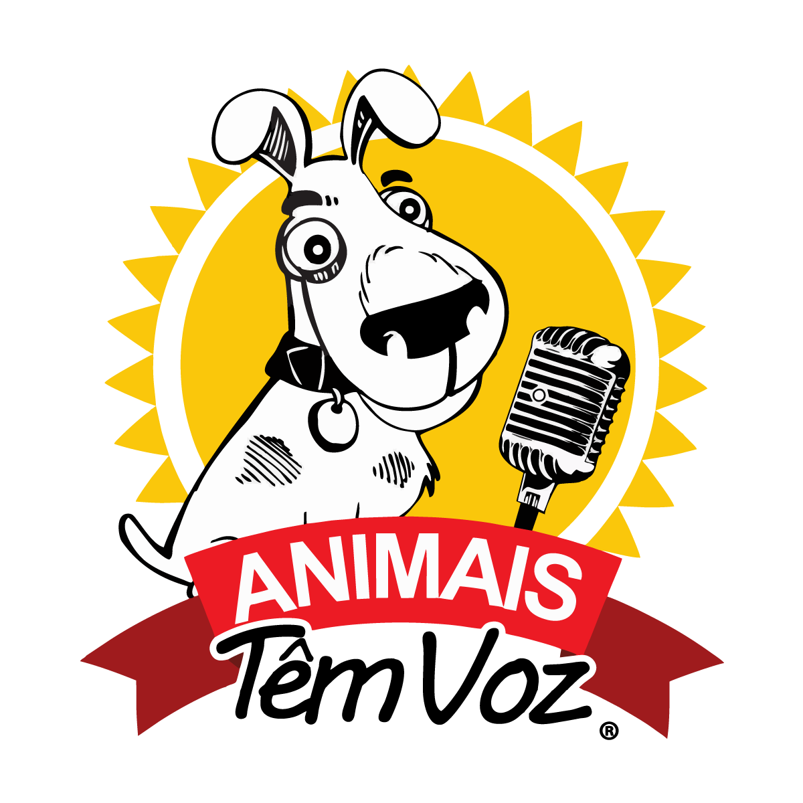

|  |
Há 10 anos a Associação Animais Têm Voz trabalha para transformar abandono e sofrimento
em
dignidade. Nesse período, mais de 800 animais já foram resgatados pela ONG que tem por
objetivo
conscientizar as pessoas sobre a adoção
responsável e contra os maus-tratos.
|

.svg.png) Site
Site
telefone: (19)99286.4517
PIX: 16.793.304/0001-93
|


Somos a SPASB – Sociedade Protetorados Animais de Santa Bárbara d’Oeste – SOS ANIMAIS, uma ONG de proteção aos animais.
Mantemos um abrigo com 150 animais resgatados da dor do abandono e de situações de maus-tratos.
Além disso, possuímos uma clínica veterinária a baixo custo dentro de nossa sede, destinada a população de baixa renda.
|

 < a href="https://sosanimaisspasb.com.br/">site
< a href="https://sosanimaisspasb.com.br/">site
|

|
O GAAR – Grupo de Apoio ao Animal de Rua – luta a anos contra o abandono e maus-tratos de cães e
gatos de Campinas e região, em um trabalho contínuo de castração, cuidados básicos e busca de lares
para eles, além de difundir a conscientização para guarda responsável e bem estar animal.
|
site
linktr
PIX E-mail: financeiro@gaarcampinas.org
|


|
A ONG (Organização Não Governamental) Vira Lata Vira Vida foi fundada em 2009. Somos uma entidade
sem fins lucrativos, responsável por um abrigo que mantém cães abandonados e vítimas de maus-tratos.
Realizamos o recolhimento seletivo de cães deficientes, idosos, com patologias graves ou vítimas de
maus-tratos. Infelizmente, não conseguimos atender toda a demanda de animais abandonados na cidade
de Piracicaba, uma vez que o abrigo vive exclusivamente do esforço dos voluntários, de doações e
contribuições da comunidade.
|
site
|